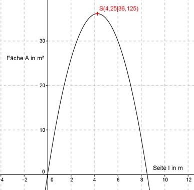

Aufgabe 106 Ein Bauer will mit 17 m Zaun ein möglichst großes, rechteckiges Stück einer Wiese einzäunen und dabei eine Scheunenwand als Begrenzung verwenden. Wie groß sind die kürzere Seite l des Zauns und die Größe der eingezäunten Fläche A? Die kürzeren Seiten sind gleich lang und gleich l. Die längere Seite ergibt sich aus Gesamtlänge - 2 * kürzere Seite oder 17 - 2 * l. Rechteckfläche A(l) = l * (17 - 2 * l) A(l) bedeutet, dass die Fläche A von der Länge l abhängt. A(l) = -2l2 + 17l Dies ist die Funktionsgleichung einer nach unten geöffneten Parabel, deren höchster Punkt der Scheitelpunkt ist. A(l) = -2l2 + 17l |:(-2) A(l) ----- = l2 - 8,5l -2 Quadratische Ergänzung: A(l) ----- = l2 - 8,5l + 18,0625 - 18,0625 -2 mit l2 - 8,5l + 18,0625 = (l - 4,25)2 A(l) ----- = (l - 4,25)2 - 18,0625 |*(-2) -2 A(l) = -2(l - 4,25)2 + 36,125 Scheitelpunkt abgelesen: S(4,25|36,125) Die Scheitelpunktkoordinaten bedeuten: Ist die Seite l = 4,25 m, dann ist die größte Fläche A(4,25) = 36,125 m². 